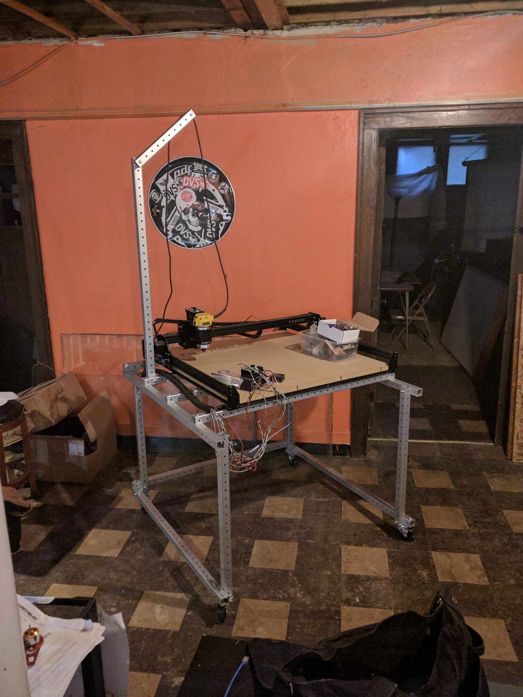
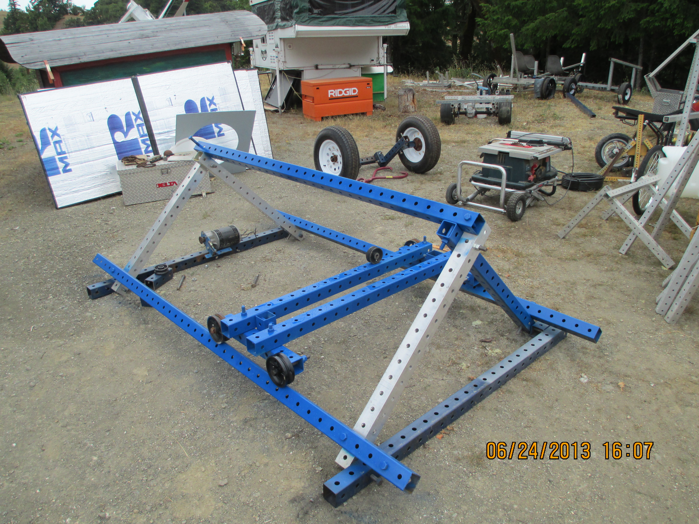

cnc routers a8ba7d6a revision 5156
^ Projects infobox ^^
| image | Avid-cnc-spoil-board.scad.png |
| designer | [[user:tim|Timothy Schmidt]] |
| date | 2013 |
| tools | [[wrenches|Wrenches]] |
| parts | [[frames|Frames]], [[nuts|Nuts]], [[bolts|Bolts]], [[plates|Plates]], [[end_caps|End caps]] |
| techniques | [[shelf_joints|Shelf joints]], [[tri_joints|Tri joints]] |
| stl | |
| git | |
Introduction
A computer numerical control (CNC) router is a computer-controlled cutting machine which uses a spindle for cutting various materials, such as wood, composites, aluminium, steel, plastics, glass, and foams. CNC routers can perform the tasks of many carpentry shop machines such as the panel saw, the spindle moulder, and the boring machine. They can also cut joinery such as mortises and tenons.
Challenges
Approaches


References
- CNCRouterParts.com 5x10 Pro
- Shapeoko, Shapeoko wiki
- Maslow sub-$500 4x8 CNC router
- Maker Made commercial version of the Maslow CNC
- GRBL UNO R3 Controller Bundle
- Anatomy of a CNC router
- ISO30 vs BT30 ATC Tool Holders - What is the difference?
- Generating CNC router toolpaths from heightmaps
- Rover CNC
- Bulkman3D Queen Bee Pro Upgrade kit
<youtube>EaGFQ7M04Wo</youtube>
<youtube>c3LhK2SAusk</youtube>
<youtube>Dov29wDiQPM</youtube>
<youtube>RDnGvhdGFEY</youtube>